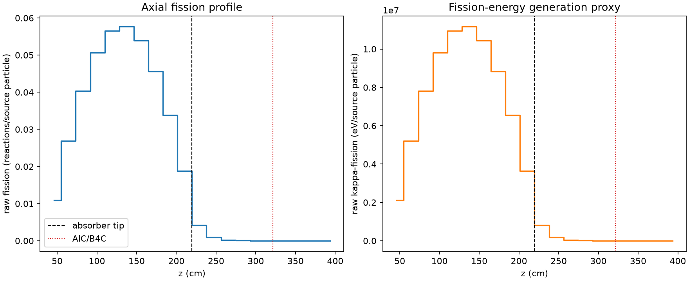
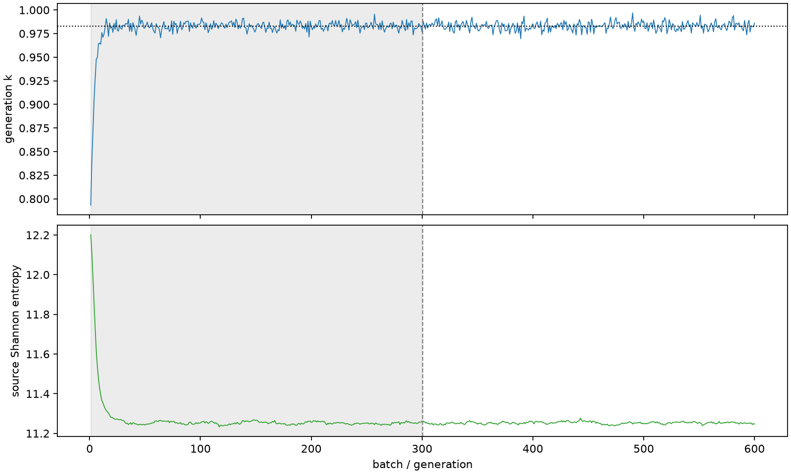

| field | value |
|---|---|
| experiment | V2-STAGE_32_OGRENCI_03-0001 |
| k | 0.9828781042074042 |
| MC standard error | 0.00018090580893184626 |
| seconds | 1044.9798265219997 |
| acceptance | not_assessed |
| convergence | review_required |
Completed is output integrity only; physical and statistical review required. Zero tallies do not prove zero production or zero uncertainty.
| diagnostic | value |
|---|---|
| geometric fuel voxels | 5280 |
| zero fission tally voxels | 457 |
| low signal fuel voxels | 1654 |
| low signal fission share | 6.642637786080816e-05 |
| low signal kappa share | 6.646732827302843e-05 |
| important fission share | 0.9500087304969144 |
| previous filter included | 3626 |
| duration estimate s | 1562.5173488400023 |
| actual minus estimate s | -517.5375223180026 |
| fission relative MC error | statistics |
|---|---|
| all_geometric_fuel | {"voxels": 5280, "positive_mean_voxels": 4823, "zero_mean_voxels": 457, "undefined_relative_error_voxels": 457, "median": 0.01284741719802362, "p95": 0.9999999999999999, "maximum": 1.0000000000000002} |
| low_signal | {"voxels": 1654, "positive_mean_voxels": 1197, "zero_mean_voxels": 457, "undefined_relative_error_voxels": 457, "median": 0.7061929047826836, "p95": 1.0, "maximum": 1.0000000000000002} |
| important_95pct | {"voxels": 2323, "positive_mean_voxels": 2323, "zero_mean_voxels": 0, "undefined_relative_error_voxels": 0, "median": 0.006789290418230888, "p95": 0.010302803165137124, "maximum": 0.012365438388702379} |
| outside_previous_filter | {"voxels": 1654, "positive_mean_voxels": 1197, "zero_mean_voxels": 457, "undefined_relative_error_voxels": 457, "median": 0.7061929047826836, "p95": 1.0, "maximum": 1.0000000000000002} |
| kappa_fission relative MC error | statistics |
|---|---|
| all_geometric_fuel | {"voxels": 5280, "positive_mean_voxels": 4823, "zero_mean_voxels": 457, "undefined_relative_error_voxels": 457, "median": 0.01282885940268948, "p95": 1.0, "maximum": 1.0000000000000002} |
| low_signal | {"voxels": 1654, "positive_mean_voxels": 1197, "zero_mean_voxels": 457, "undefined_relative_error_voxels": 457, "median": 0.7061518497483178, "p95": 1.0, "maximum": 1.0000000000000002} |
| important_95pct | {"voxels": 2323, "positive_mean_voxels": 2323, "zero_mean_voxels": 0, "undefined_relative_error_voxels": 0, "median": 0.006779400119278158, "p95": 0.010290791441014817, "maximum": 0.012349480801110493} |
| outside_previous_filter | {"voxels": 1654, "positive_mean_voxels": 1197, "zero_mean_voxels": 457, "undefined_relative_error_voxels": 457, "median": 0.7061518497483178, "p95": 1.0, "maximum": 1.0000000000000002} |
| axial bin | fission share | kappa-fission share |
|---|---|---|
| 1 | 0.027266651122284866 | 0.02726796108045702 |
| 2 | 0.06722655513476763 | 0.0672260587766822 |
| 3 | 0.10077485342949465 | 0.1007740084985825 |
| 4 | 0.12632994801802888 | 0.12632888502845177 |
| 5 | 0.14117295424748752 | 0.14117157299049093 |
| 6 | 0.14388085796593517 | 0.14387984504131474 |
| 7 | 0.13450615249254075 | 0.13450488255327672 |
| 8 | 0.1138822366079013 | 0.11388161663011175 |
| 9 | 0.08437525493655709 | 0.08437474116723022 |
| 10 | 0.04696965821990454 | 0.04696988723915962 |
| 11 | 0.010573818865263217 | 0.010577981249871596 |
| 12 | 0.0023407004781367978 | 0.0023418045801244644 |
| 13 | 0.0005423546149418282 | 0.0005426532088976713 |
| 14 | 0.0001225879251012048 | 0.00012266145889042692 |
| 15 | 2.7341453793834088e-05 | 2.7356754731211115e-05 |
| 16 | 5.446945035129693e-06 | 5.454046165512294e-06 |
| 17 | 1.394249179502041e-06 | 1.3952916695703047e-06 |
| 18 | 4.6194062562870487e-07 | 4.6269640765075887e-07 |
| 19 | 6.992594897977271e-07 | 6.995271393685869e-07 |
| 20 | 7.209353075532708e-08 | 7.218034506081848e-08 |
Histories include the inactive-to-active transition at batch 300. kappa-fission approximates fission energy production, not total heat deposition.

